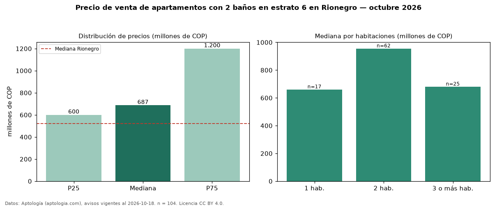

Precio de venta de apartamentos con 2 baños en estrato 6 en Rionegro — octubre 2026
Con 104 avisos vigentes, el precio mediano de apartamentos con 2 baños en estrato 6 en venta en Rionegro es COP 687 millones. Frente a la mediana de los apartamentos en estrato 6 en venta de Rionegro (COP 1,19 mil millones, n = 197), queda 42 % por debajo; este segmento reúne el 53 % de esos avisos. Por metro cuadrado, la mediana es COP 9,46 millones/m² (n = 103), 9 % por debajo de los apartamentos en estrato 6 en venta de Rionegro (COP 10,44 millones/m²). El área mediana anunciada es 76 m². El segmento con más oferta es el de 2 habitaciones (62 avisos, mediana COP 955 millones); pasar de 1 habitación a 3 o más habitaciones cambia la mediana +3 %. La administración mediana declarada es COP 455.000 al mes (n = 64). La mitad central de los avisos va de COP 600 millones a COP 1,20 mil millones (razón 2,0), una dispersión moderada. La mediana de todos los apartamentos en venta de Rionegro es COP 520 millones (+32 % de diferencia). Datos: Aptología (aptologia.com), CC BY 4.0 — https://www.aptologia.com/venta/rionegro. Archivos: PDF, CSV con las cifras y gráfica PNG.

| Avisos únicos | 104 |
|---|---|
| Percentil 25 | COP 600.167.910 |
| Mediana | COP 687.000.000 |
| Percentil 75 | COP 1.200.000.000 |
| Mediana por m² | COP 9.459.459 |
Fuente: avisos vigentes de portales inmobiliarios recopilados por Aptología, deduplicados (mínimo 30 avisos únicos por celda). Precios pedidos, no cerrados. Fecha: 2026-10-18.